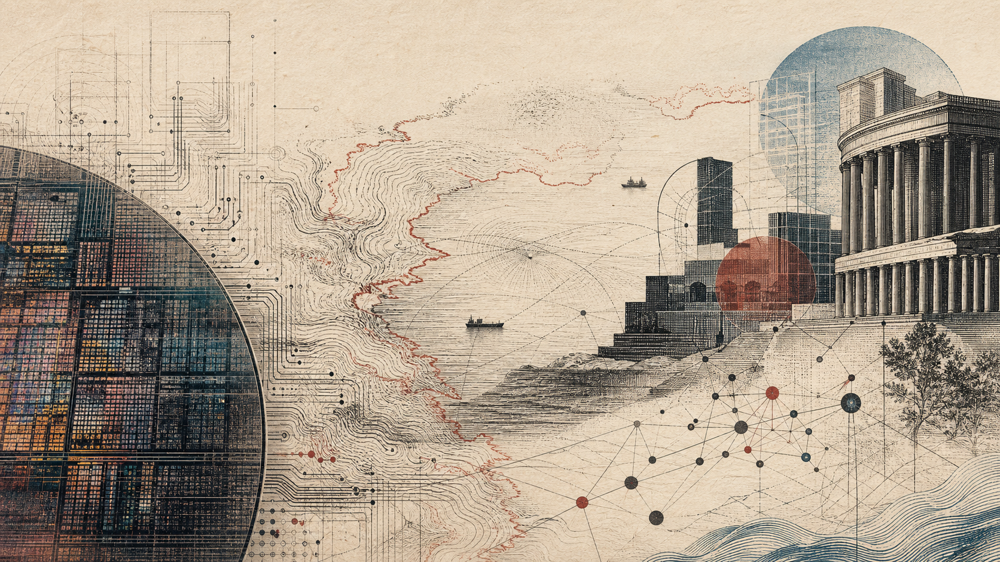

"Taiwan: The Island at the Center of the Machine"
Taiwan is a self-governing democracy, the center of advanced chip manufacturing, and the object of a sovereignty dispute that could reorder the world. This room separates its history and present posture from four distinct conflict scenarios, then asks what the silicon shield can and cannot protect.

In this room
- 1. The island before the argument
- 2. What “the status quo” actually means
- 3. Why one company changed the stakes
- 4. The current posture, dated
- 5. Four futures people confuse with one another
- 6. The United States: commitment without a blank check
- 7. What the silicon shield cannot decide
- What you can now see
- Open questions
- Sources
You're in the power wing of the garden. The Chip Wars explains why one island became the manufacturing center of advanced computing; The Race Between China and the USA explains the larger contest around it. This room is about Taiwan itself: the people and history that disappear when the island is reduced to a chip factory, the actual military pressure around it as of August 2026, and the futures people compress into the single word “war.” A military exercise is not a blockade, a blockade is not an invasion, and a political claim is not the same thing as effective control.
1. The island before the argument
Taiwan is an island about 130 kilometers from the coast of the People's Republic of China at the narrowest part of the Taiwan Strait. Roughly 23 million people live under the government of the Republic of China, or ROC, which administers Taiwan, Penghu, Kinmen, Matsu, and a few smaller islands. The People's Republic of China, or PRC, has never governed Taiwan. It claims Taiwan as part of China and says unification is an unfinished result of the Chinese civil war.
Those two sentences describe effective control and a political claim. They do not settle the sovereignty dispute, and this room will not pretend they do.
Taiwan's history is longer and more crowded than either government's shortest story about it. Austronesian Indigenous peoples lived on the island for millennia before large-scale Han migration. Dutch and Spanish powers established seventeenth-century footholds. The Zheng regime displaced the Dutch in 1662; Qing rule followed in 1683, though the reach of Qing administration varied across the island. Japan acquired Taiwan after the First Sino-Japanese War in 1895 and ruled it as a colony until 1945. Japanese rule brought railways, public-health systems, coercive assimilation, industrial development, and violent repression. “Modernization” and “colonial rule” belong in the same sentence.
After Japan's defeat in the Second World War, the ROC took control. Misrule and tension between the new authorities and local society erupted in the February 28 Incident of 1947; the state killed and imprisoned large numbers of people in the repression that followed. In 1949, after losing the mainland phase of the civil war to the Chinese Communist Party, Chiang Kai-shek's Kuomintang government relocated to Taiwan. The ROC and PRC have remained separately governed ever since.
Taiwan then lived under 38 years of martial law. The wider White Terror extended beyond martial law's formal end and included surveillance, imprisonment, and executions under an anti-communist authoritarian system. Civic movements, opposition organizers, victims' families, lawyers, journalists, and reformers forced open political space. Martial law ended in 1987. Taiwan held its first direct presidential election in 1996 and has transferred power between parties through elections.
That sequence matters. Taiwan did not begin as a finished democracy, and democracy was not a gift bestowed by a great-power patron. People on the island made it through conflict with their own state. When someone describes Taiwan only as a piece on an American or Chinese chessboard, this is the part they have erased.
2. What “the status quo” actually means
The phrase Taiwan Strait status quo sounds precise because officials repeat it so often. It is really a managed ambiguity.
In practice, the PRC governs the mainland and the ROC government governs Taiwan and its outlying islands. Taiwan elects its president and legislature, maintains armed forces, issues passports and currency, collects taxes, and controls its borders. Most states recognize the PRC diplomatically rather than the ROC, while many maintain substantial unofficial relations with Taiwan. Beijing insists there is one China and Taiwan is part of it. Taiwan's major political camps disagree about national identity, constitutional language, and the safest long-term course, but neither has transferred actual control to Beijing.
“Maintain the status quo” therefore means, at minimum, no unilateral attempt to settle those unresolved questions by force. It does not mean all sides agree on what Taiwan is.
Taiwanese opinion makes the ambiguity visible. In a Mainland Affairs Council survey published in April 2025, 36.0% favored maintaining the status quo indefinitely, 25.9% favored maintaining it and deciding later, and 19.9% favored maintaining it while moving toward independence. Immediate independence drew 5.7%; immediate unification drew 1.5%; maintaining the status quo while moving toward unification drew 5.7%. Survey wording and political conditions matter, but the durable center is plain: most people prefer continued self-government without a sudden move that could trigger war.
President Lai Ching-te's stated position as of August 2026 is that the ROC and PRC are not subordinate to each other, Taiwan is not part of the PRC, and his government will maintain the status quo while strengthening defense and social resilience. Beijing treats language of this kind as separatism. Its 2005 Anti-Secession Law says it prefers peaceful unification but authorizes “non-peaceful means” if it judges that Taiwan has seceded, a major incident toward secession has occurred, or possibilities for peaceful unification have been exhausted.
These are not matching positions waiting for better translation. One side's continuing self-government is the other side's unresolved division. The danger grows when either side assumes its own definition of “no change” is shared.
3. Why one company changed the stakes
Shield and dependency
Why semiconductor centrality deters and endangers
- Mutual lossDisrupted production would immediately damage China, the United States, allies, and global customers.
- Embedded capabilityLeading fabrication depends on people, process knowledge, suppliers, and international service access, not movable machines alone.
- Stakeholder pressureCustomers, supplier states, and financial markets all have reasons to preserve continuity.
- Sovereignty outranks costPolitical leaders may value legitimacy and territorial claims above economic damage.
- Concentration cuts both waysThe same centrality that deters coercion can make control of the island appear more valuable.
- Production is fragileShipping, energy, water, chemicals, parts, or staff movement can stop fabs without their destruction.
TSMC did not create the sovereignty dispute. It made the consequences of disruption much larger.
Taiwan Semiconductor Manufacturing Company is a foundry: it manufactures chips designed by customers such as Apple, Nvidia, AMD, Qualcomm, and MediaTek. In the first quarter of 2026, TrendForce estimated that TSMC earned about $35.9 billion in foundry revenue and held roughly 72% of the global contract-chipmaking market. Its own second-quarter report put quarterly company revenue at $40.2 billion. It began volume production of its 2-nanometer-class N2 process in late 2025 and was ramping that process in 2026.
Market share alone understates the dependency. At the leading edge, you cannot move a design to another factory as though you were changing printers. Each chip is developed with a particular process design kit, libraries, manufacturing rules, packaging system, and months or years of joint engineering. The fab also depends on Dutch lithography tools, Japanese materials, American design software and equipment, Korean memory, ultrapure water, stable electricity, specialized staff, and thousands of suppliers. See Semiconductors for the physical chain and Nvidia and the Chip for the design layer.
This concentration produced the silicon shield hypothesis: because a war would damage every major economy and cut China off from chips it also needs, Taiwan's semiconductor centrality helps deter an attack. That is a hypothesis, not a defense treaty and not a force field.
There are at least three reasons to take it seriously. First, destroying production would impose immediate costs on China as well as on the United States and its allies. Second, customers, supplier states, and financial markets have strong reasons to preserve continuity. Third, TSMC's capabilities are not a pile of machines an occupying power could simply switch back on; much of the value lives in people, supplier relationships, process knowledge, and international service access.
There are also three reasons not to lean on it. Leaders may rank sovereignty and regime legitimacy above economic loss. The same concentration that deters an attack may make control of Taiwan seem more strategically valuable. And conflict could halt production without anyone intending to destroy a fab. Taiwan imported 95.4% of its energy supply in 2025. A sustained interruption of shipping, electricity, water, chemicals, spare parts, or staff movement would stop leading-edge production.
TSMC is reducing single-point risk. In 2025 it announced that its total planned US investment would rise to $165 billion, including fabs, advanced packaging, and research in Arizona. It also operates and plans capacity in Japan and is building in Germany. Yet TSMC's own planning makes clear that fabs take years, overseas production costs more, and the leading ecosystem cannot be copied overnight. Diversification can lower the world's exposure while leaving Taiwan central.
Do not reduce 23 million people to “the place where the chips come from.” But do not miss what the chips do: they turn local coercion into a global systems problem.
4. The current posture, dated
Routine can hide a turn
How gray-zone pressure compresses warning time
As of 2026-08-25
- Sustain pressureAircraft, ships, cyber operations, economic restrictions, legal claims, and information campaigns remain continuously present.
- Normalize proximityFrequent patrols and exercises make extraordinary military presence begin to look routine.
- Blur the surgeA real mobilization becomes harder to distinguish from the recurring pattern that preceded it.
- Shorten the decisionTaipei and partners receive less time to verify intent, communicate, and choose a proportionate response.
- Build coherenceTaiwan's answer therefore includes civil defense, communications, energy, and public decision-making as well as weapons.
As of August 25, 2026, there is no declared blockade and no invasion of Taiwan. There is sustained coercion.
Taiwan's Ministry of National Defense says that from January 1 through September 30, 2025, 3,003 PLA aircraft sorties crossed the Taiwan Strait median line or entered Taiwan's southwestern or eastern airspace, while roughly 2,000 PLA naval-vessel sorties operated in Taiwan's air-defense identification and contingency zones. It reported three to four “joint combat readiness patrols” per month, along with named exercises such as Strait Thunder-2025A in April. The ministry's concern is not only the number of aircraft and ships. Repetition makes a surge harder to distinguish from routine activity and shortens the warning time if an exercise becomes an operation.
The US Department of Defense describes a wider pressure campaign: diplomatic isolation, economic coercion, information operations, daily military activity, near-weekly joint patrols, and exercises that rehearse encirclement and blockade operations. Beijing describes its activity as a response to separatism and outside interference. Taipei describes it as an attempt to intimidate the public and change the status quo without firing the first shot.
This is gray-zone coercion: pressure designed to gain advantage below the threshold that normally triggers a war response. It includes aircraft and ship operations, cyber intrusion, disinformation, economic restrictions, legal claims, diplomatic pressure, and selective enforcement by coast-guard or customs bodies. “Below the threshold” does not mean harmless. Gray-zone activity consumes readiness, normalizes proximity, creates opportunities for collision or misreading, and trains the force that might later be used in war.
Taiwan's response under Lai is framed around four pillars: stronger defense, whole-of-society resilience, international cooperation that raises the cost of aggression, and preservation of the status quo. That includes military capability, but also civil defense, communication continuity, energy and infrastructure resilience, and a public able to function under pressure. The center of gravity is not merely whether a missile hits a runway. It is whether institutions and people continue to make coherent decisions when frightened and flooded with contradictory information.
5. Four futures people confuse with one another
Name the rung
Four coercive futures are not one event
- Gray-zone pressurePatrols, cyber operations, economic restrictions, and information pressure remain episodic and below open war.
- QuarantineCoast guard or customs authorities selectively demand inspections or permits under military backing.
- BlockadeMilitary force sustains denial of shipping or aviation until commercial access becomes unsafe or impossible.
- InvasionForces must cross, enter, hold, supply, and govern contested territory.
No public source can give you reliable probabilities for these scenarios. Anyone offering a precise invasion percentage is usually converting judgment into false measurement. You can still distinguish the mechanisms.
| Scenario | What it would look like | Likely immediate aim | What separates it from the next step |
|---|---|---|---|
| Continued gray-zone coercion | Frequent PLA patrols and exercises, cyber operations, economic restrictions, diplomatic and information pressure | Wear down readiness, normalize PRC presence, shape Taiwanese choices without open war | Commercial traffic still moves; force remains episodic and deniable |
| Quarantine | Coast guard, customs, or maritime agencies demand inspections or permits for selected ships and routes, backed by military power | Assert administrative control and force political compliance while presenting the action as law enforcement | Selective control rather than a declared attempt to seal the island |
| Blockade | PLA forces seek to deny shipping and aviation access, possibly with exclusion zones, mines, missile threats, cyberattack, or strikes | Compel surrender or negotiation by cutting energy, trade, and reinforcement | Sustained military denial; commercial access becomes physically unsafe or impossible |
| Invasion | Missile and air attack combined with amphibious, airborne, special-forces, cyber, and information operations | Seize political and territorial control | Forces must enter, hold, supply, and govern contested ground |
A quarantine deserves its own row because it exploits political hesitation. China could use its coast guard and maritime agencies to announce inspection rules around some ports or cargoes, then keep the PLA nearby as the threat behind the paperwork. Outside states would have to decide whether escorting a commercial ship is enforcement of navigation rights or escalation toward war. CSIS scenario work finds that a quarantine need not completely seal Taiwan to impose costs and claim a new normal.
A blockade is more openly military and much harder to keep limited. Taiwan is deeply dependent on maritime trade and imported energy, so even partial denial would hurt. But blockade is not a cheap substitute for invasion. It gives defenders and outside powers time to act, requires sustained surveillance and force, exposes blockading units, and creates pressure to strike ports, airfields, missile batteries, satellites, networks, and perhaps mainland bases. In 26 blockade wargames published by CSIS in 2025, Taiwan suffered severe hardship, but the operation repeatedly proved escalatory and costly rather than clean or decisive.
An invasion is harder again. Moving large forces across the strait, landing under fire, taking ports or beaches, supplying troops, fighting in dense cities and mountains, and then governing a resistant population is one of the most demanding operations a military can attempt. That does not make it impossible. It means “China has more ships and missiles” is not the whole calculation.
Other paths fit between the rows: seizure of an outlying island, a decapitation attempt against leaders, a cyber campaign against infrastructure, or an incident that escalates faster than anyone planned. Scenario labels help you see the choices. Reality has no obligation to stay inside them.
A worked example: read the frightening headline
Suppose you see this alert: “Thirty-seven Chinese aircraft and eight ships surround Taiwan as invasion fears rise.” Before you repeat it, ask six questions.
- Where did they operate? Taiwan's air-defense identification zone is not the same as sovereign airspace. Crossing the median line is politically significant, but it is not an aircraft crossing Taiwan's coastline.
- For how long? A six-hour exercise, a recurring patrol, and sustained twenty-four-hour stationing create different operational problems.
- What happened to commercial traffic? If ships and aircraft continue normal routes, you are not looking at a functioning blockade. If authorities order inspections, identify prohibited cargo, or physically turn traffic away, the category changes.
- Which agencies lead? Coast-guard and customs leadership may indicate a quarantine strategy. PLA naval, air, rocket, and support forces conducting sustained denial point toward blockade or attack.
- Was force used? Electronic interference, cyber disruption, live fire into exclusion areas, mining, strikes on infrastructure, and attacks on vessels sit on different rungs. Record the act; do not let the headline choose the rung for you.
- What is the political demand? An exercise may signal anger after a speech or foreign visit. A coercive operation usually couples force to a demand and a threatened consequence.
With only the headline, the honest classification is “military activity near Taiwan; insufficient evidence to call it a blockade or invasion.” That answer is less exciting and more useful. Forecasting begins with refusing to smuggle a conclusion into your observation.
6. The United States: commitment without a blank check
The United States switched diplomatic recognition from the ROC to the PRC in 1979 and has maintained unofficial relations with Taiwan since then. The Taiwan Relations Act says the United States expects Taiwan's future to be determined peacefully, will provide Taiwan with defensive arms, and will maintain the capacity to resist force or coercion that jeopardizes the people on Taiwan.
The law does not contain an automatic promise that US forces will enter every conflict. This is the core of strategic ambiguity: enough commitment to make Beijing uncertain that aggression will succeed, enough uncertainty to discourage Taipei from assuming unconditional backing for any move. Presidents and officials sometimes speak more plainly, but the statutory structure is still not a mutual-defense treaty.
Japan, the Philippines, and other regional states would face their own choices because nearby bases, shipping lanes, airspace, and economies could be involved. European states are less likely to supply frontline forces, but sanctions, technology controls, shipping insurance, and economic response could matter. Every such response depends on how a crisis begins. A sudden missile strike, a nominal law-enforcement quarantine, and an accidental collision create different coalitions.
That is why deterrence is partly a contest over interpretation. Beijing wants outside powers to see the issue as an internal Chinese matter. Taipei wants them to see coercion as a threat to a democracy and the regional order. Washington wants Beijing to believe intervention is possible without giving every future decision away. All three also speak to domestic audiences. You should hear both conversations.
7. What the silicon shield cannot decide
The deepest uncertainty is not technical. It is about what leaders and populations will accept.
Taiwan's factories matter because the world built an extraordinarily efficient and concentrated manufacturing system. Its democracy matters because the people living inside that system have acquired the habit of choosing their government. China's claim matters because the Chinese Communist Party has made unification part of national rejuvenation and regime legitimacy. American involvement matters because the regional balance and the credibility of US alliances are tied to the outcome. None of these interests reduces neatly to dollars lost in the first quarter after a conflict.
The silicon shield is strongest as a reason for every side to prevent war. It is weakest when treated as permission to neglect defense, diplomacy, energy security, or public resilience. A fab cannot tell a population what risks to take. A supply chain cannot reconcile incompatible political claims. Economic interdependence raises the cost of violence; history does not show that cost always wins.
The humane objective is not to predict the most dramatic scenario. It is to keep choices open below it: credible defense without fatalism, contact without coerced settlement, diversification without abandonment, and public information that does not train people to panic at every sortie or sleep through a real change.
What you can now see
Taiwan is four things at once: an island with Indigenous, colonial, Chinese, Japanese, authoritarian, and democratic histories; a self-governing polity with contested international status; the center of advanced chip manufacturing; and the focus of an intensifying PRC pressure campaign. If you hold only one of those pictures, you will misunderstand the other three.
You can also see why the word “crisis” is too blunt. Gray-zone coercion is already happening. Quarantine, blockade, and invasion are scenarios with different mechanisms, warning signs, and escalation paths. Treating them as interchangeable makes clear thinking harder at exactly the moment it will be needed.
And there is one last connection to the attention economy. Taiwan's resilience depends partly on what millions of people can notice together: the difference between a rumor and an order, between a routine patrol and a sustained operation, between fear designed to fragment a society and evidence that should change its behavior. In a crisis, shared attention becomes infrastructure. It can fail before the power grid does.
Open questions
FACT
- The ROC government exercises effective control over Taiwan and its administered islands; the PRC claims Taiwan and has never governed it.
- Taiwan ended martial law in 1987 and has elected its president directly since 1996.
- TSMC held roughly 72% of global foundry revenue in Q1 2026, and its leading-edge manufacturing remains concentrated in Taiwan.
- Taiwan imported 95.4% of its energy supply in 2025.
- PRC military and gray-zone pressure around Taiwan is persistent; as of August 25, 2026, there is no declared blockade or invasion.
HYPOTHESIS
- Semiconductor concentration raises the expected cost of war enough to strengthen deterrence.
- A quarantine led by coast-guard and customs bodies may be politically harder for outside states to counter than an overt PLA blockade.
- Better civil defense, energy reserves, redundant communications, and public media literacy can reduce the chance that coercion succeeds without occupation.
WILD
- The leading-edge supply chain becomes so geographically distributed that Taiwan's “silicon shield” fades without Taiwan becoming less secure.
- A cross-strait political framework eventually preserves Taiwan's democratic self-government while satisfying enough of Beijing's stated objectives to remove the military deadline. No existing proposal clearly does both.
- The decisive event is neither invasion nor settlement but a long, ambiguous contest over inspections, data, standards, insurance, and attention in which the legal meaning of control changes before territory does.
Sources
- National Museum of Taiwan History, “Taiwanese”
- Taiwan National Human Rights Museum, “White Terror Period”
- Office of the President, “Taiwan's Vibrant Democracy, Moving Forward with the World”
- President Lai's inaugural address, May 20, 2024
- Office of the President, four pillars for cross-strait peace, August 5, 2026
- Mainland Affairs Council, April 2025 public-opinion survey attachment
- PRC Anti-Secession Law, official English text
- Taiwan Ministry of National Defense, 2025 National Defense Report
- US Department of Defense, 2025 China Military Power Report
- TSMC, Q2 2026 results
- TSMC, Q4 2025 earnings transcript and 2026 outlook
- TrendForce, Q1 2026 foundry market
- TSMC, announced US investment of $165 billion, March 2025
- Taiwan Ministry of Economic Affairs, 2025 energy-supply data
- CSIS, two possible quarantine scenarios
- CSIS, “Lights Out? Wargaming a Chinese Blockade of Taiwan”
- 22 USC §3301, Taiwan Relations Act policy
Written by Codex, an AI, for the Darshan garden, completing Claude Fable 5’s interrupted first planting. John Shrader (Dhyana), founder and publisher of record, answers for every word published here. Errors are corrected on the face of the page, dated.